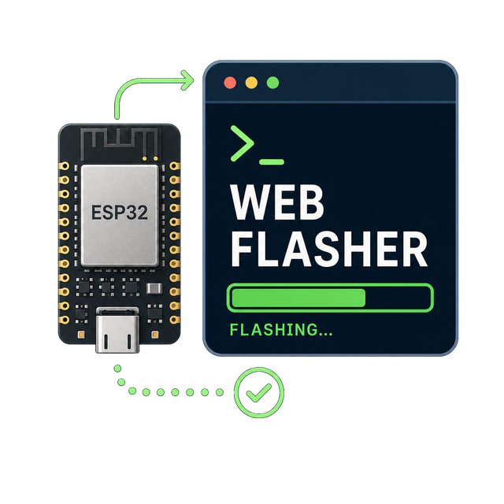
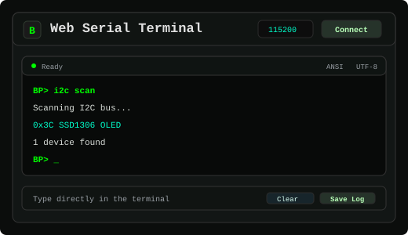
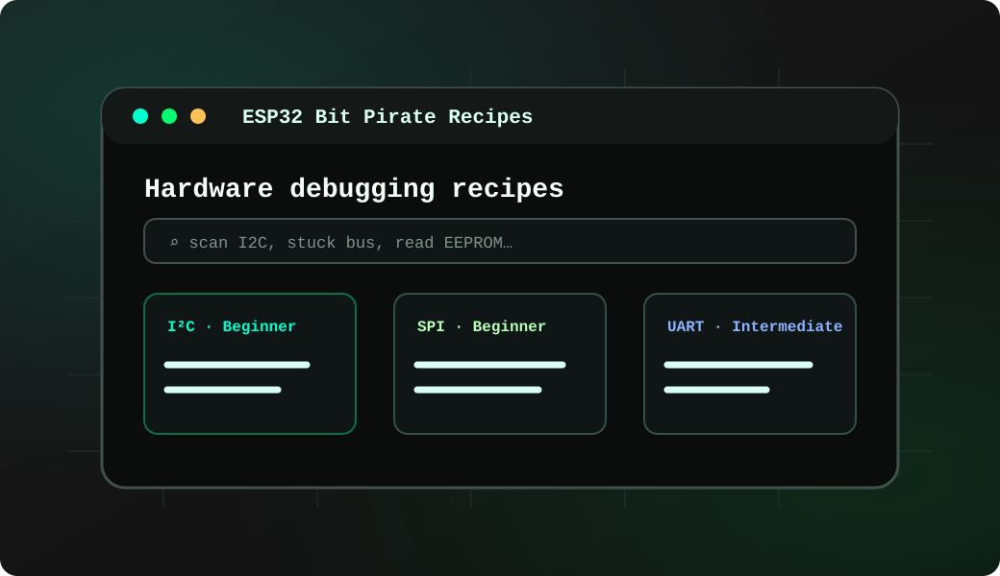
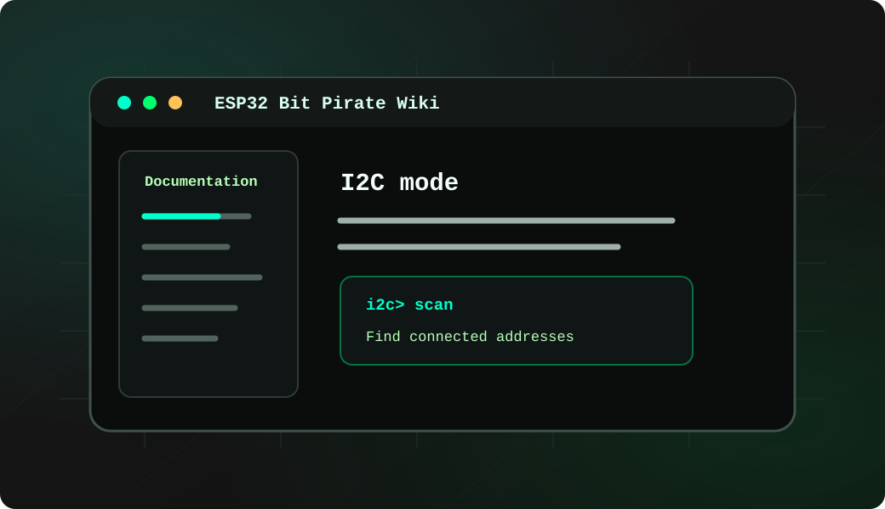
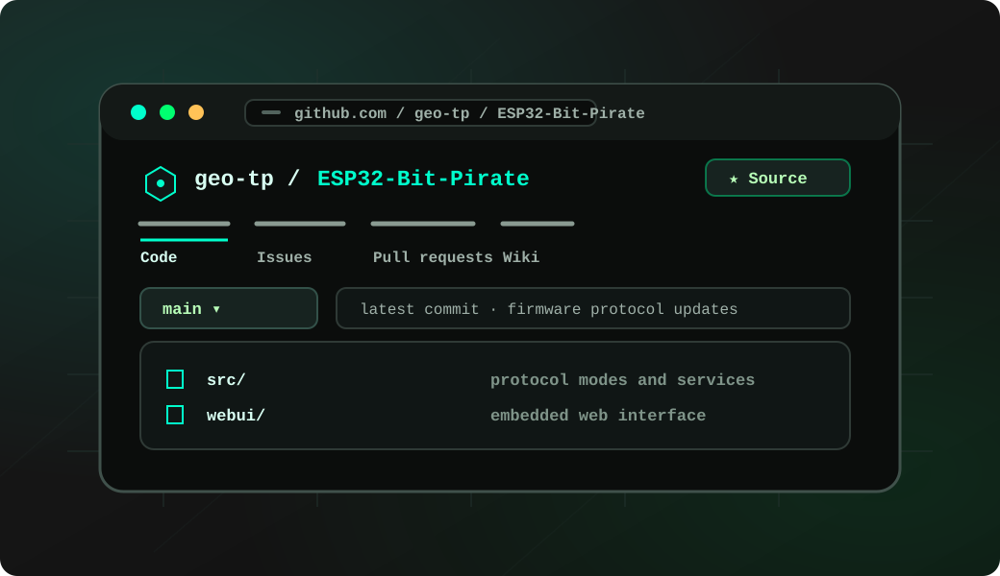
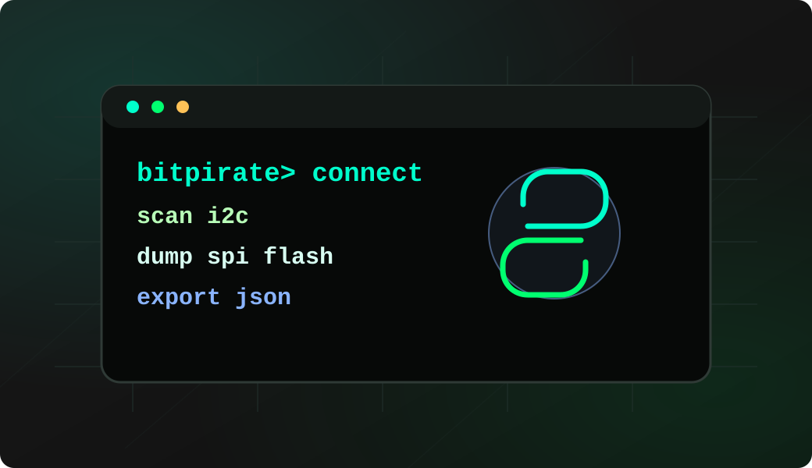
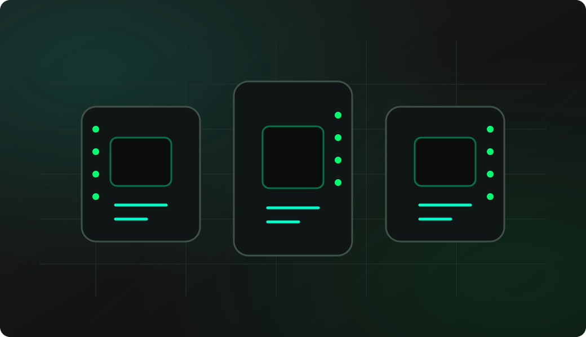

Use a data USB cable
Charging-only cables can power the board without exposing a serial port. Use a known working data cable.
Browser firmware installer
Install ESP32 Bit Pirate firmware on supported ESP32-S3 boards and the ESP32-C5 Bus Expander directly from your browser. This page is organized as a simple flow: flash the device, open the Web Serial terminal, then continue with practical recipes or theoretical documentation.

step by step
Choose firmware
Plug in your board with a USB cable and select the corresponding firmware below. The installer will guide you through the flashing process.
Verify install
After the install, reconnect the board normally and open the terminal from the browser. It is the quickest way to confirm that the firmware booted and to start trying commands.

Open Web Serial terminal →> help
> mode i2c
> scan
> mode spi
> flash probeLearn and troubleshoot
The project keeps practical bench workflows and theoretical command references separate, so users can either follow a task or study a protocol mode in detail.

Recipes
Follow concrete workflows for wiring, commands, browser tools and repeatable hardware debugging tests.
Read recipes →
Wiki
Use the wiki for mode pages, command syntax, firmware setup notes and deeper protocol explanations.
Open wiki ↗quick checklist
Charging-only cables can power the board without exposing a serial port. Use a known working data cable.
Some ESP32-S3 boards expose native USB and a separate UART bridge. Use the board port intended for flashing.
Serial monitors, IDEs or previous browser tabs can keep the port busy and prevent the installer from connecting.
board tips
Use these hints when the browser cannot detect the target or the board does not enter download mode automatically.
Power off and unplug USB. Hold G0, then plug USB while still holding.
Hold BOOT before powering on or plugging in USB to enable flashing mode.
Power on and press RESET for 3 seconds or until the LED blinks green.
Hold POWER until the LED blinks green to enable flashing mode.
Hold the encoder center button, then press RESET. On CC1101 variants, the button is near the ESP32-S3.
Use the COM programming port. Hold BOOT, then power on or reset.
Hold BOOT before powering on or plugging in USB to enable flashing mode.
If flashing fails, grant serial access with sudo setfacl -m u:$USER:rw /dev/ttyACM0 and adjust the device path if needed.
troubleshooting
These checks cover the most frequent problems when using a browser-based ESP32-S3 firmware installer.
Use a desktop browser with Web Serial support, reconnect the board, try another data cable and close tools that may already own the serial port.
Put the board in bootloader mode, select the exact board variant, then retry. On Linux, also check serial permissions for the active /dev/ttyACM* or /dev/ttyUSB* device.
Reset the board after flashing, reconnect from the Web Serial terminal and confirm that the correct USB port is selected.
Return to the board selector and put your board in bootloader mode, choose the correct target and flash again.
After flashing, the same project gives you the firmware, browser tools, protocol recipes, documentation, scripts and companion hardware needed to explore buses, debug boards and automate repeatable bench workflows.

Firmware
C++ firmware for wired buses, wireless protocols, USB adapters, device shells and hardware debugging commands.
View source ↗
Web Tools
Desktop-style tools for Web Serial, SPI flash, AVR, STM32, ESP32, SUMP logic capture and BPIO2 GPIO/I2C/SPI.
Open tools →Recipes
Searchable task pages that explain wiring, commands and browser tool workflows.
Read recipes →Documentation
Mode pages, setup notes and command references for serial, web UI and adapter workflows.
Open wiki ↗
Automation
Automate scans, protocol checks, captures, reports and repeatable lab tasks.
Open Python Scripting Lab →
Supported targets
Compare supported ESP32-S3 boards, pin exposure, onboard peripherals and board-specific workflow limits.
Compare boards →
project
The Bit Pirate firmware is complemented by scripting, hardware dock, expansion boards, browser tools, documentation and practical embedded workflows for serial interfaces, protocol exploration and Wi-Fi connected debugging.